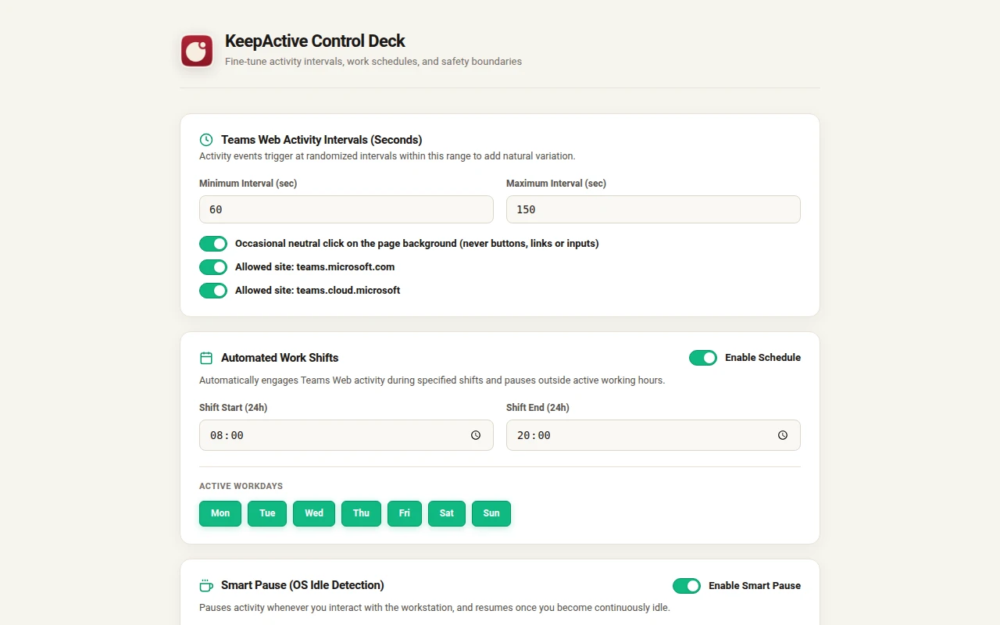
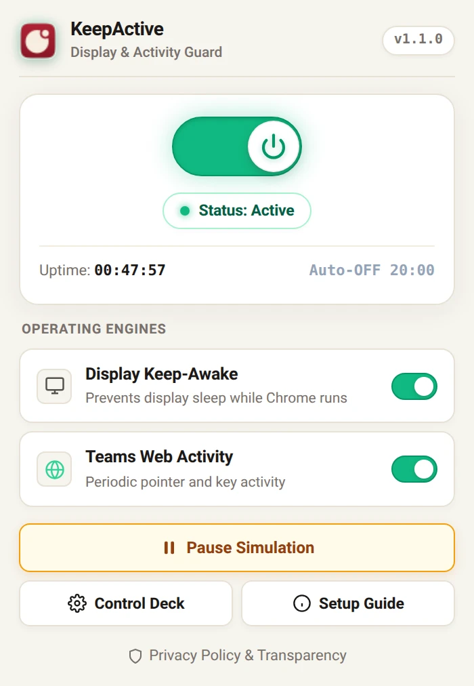

Active
A solid dot. You’re covered.
The display stays awake. In your open Teams tab, KeepActive sends a small pointer move, a Shift tap or a focus ping at random intervals, every 60 to 150 seconds by default.
Chrome extension · Local-only
KeepActive keeps your display awake and gives Microsoft Teams on the web a small, human-paced sign of life, on the schedule you choose. The moment you’re back at the keyboard, it steps aside.
01 · The mark is the status
Active
The display stays awake. In your open Teams tab, KeepActive sends a small pointer move, a Shift tap or a focus ping at random intervals, every 60 to 150 seconds by default.
Paused
Smart Pause watches your computer’s idle signal. Touch the keyboard or mouse and activity stops at once. It resumes only after the idle delay you pick.
Off
Outside your shift, after the session safety limit, or when you switch it off with Alt+Shift+S: no events and no keep-awake.
02 · What’s inside
Asks Chrome to keep the screen on while KeepActive is active. There are no drivers or installers, and it never overrides your company’s lock policy.
Randomized pointer moves, Shift taps and focus pings in top-level Teams tabs. The occasional click lands only on the empty page background, never on a button, link or message box.
Choose workdays and hours, overnight shifts included. Outside them, KeepActive rests.
Real keyboard, mouse, wheel or touch input in Teams pauses activity instantly. No guessing.
teams.microsoft.com and teams.cloud.microsoft03 · The interface


The popup for status and quick control. The Control Deck for intervals, shifts and Smart Pause.
04 · Privacy
Your settings and a short diagnostics log stay in chrome.storage.local, inside your Chrome profile. KeepActive has no server, analytics, account or remote code, and this site loads nothing from third parties.
teams.microsoft.com and teams.cloud.microsoft. It never reads messages.05 · Straight answers
No. Microsoft controls presence and can change how it works. KeepActive sends small activity events. It can’t guarantee a status.
No. It never reads Teams content, never types text, and never clicks buttons, links or inputs.
No. Screen-lock policy, device management, endpoint security and Group Policy still apply. KeepActive doesn’t touch them.
That depends on your organization. Check your acceptable-use policy and Microsoft’s terms before using automated activity.
No. It works with Teams on the web, in a Chrome tab you keep open. Chrome may slow timers in background tabs, so a normal open tab works best.
Built for long, passive sessions: presentations, dashboards, renders and downloads. Chrome 116 or newer.